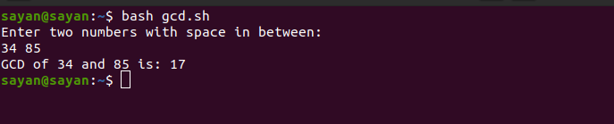

In mathematics, the greatest common divisor (gcd) of two or more integers, which are not all zero,
is the largest positive integer that divides each of the integers.
echo "Enter two numbers with space in between: "
read x y
m=$x
if [ $y -lt $m ]
then m=$y
fi
while [ $m -ne 0 ]
do
a=`expr $x % $m`
b=`expr $y % $m` #If both a and b are 0, then task done
if [ $a -eq 0 -a $b -eq 0 ]
then
echo "GCD of $x and $y is: $m"
break
fi
m=`expr $m - 1`
done
If we save this file as gcd.sh, then we will run it as: bash gcd.sh
